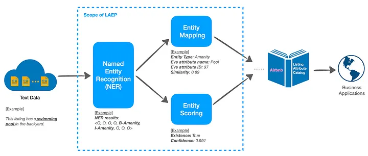
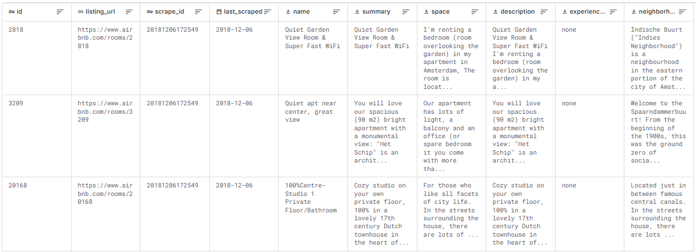
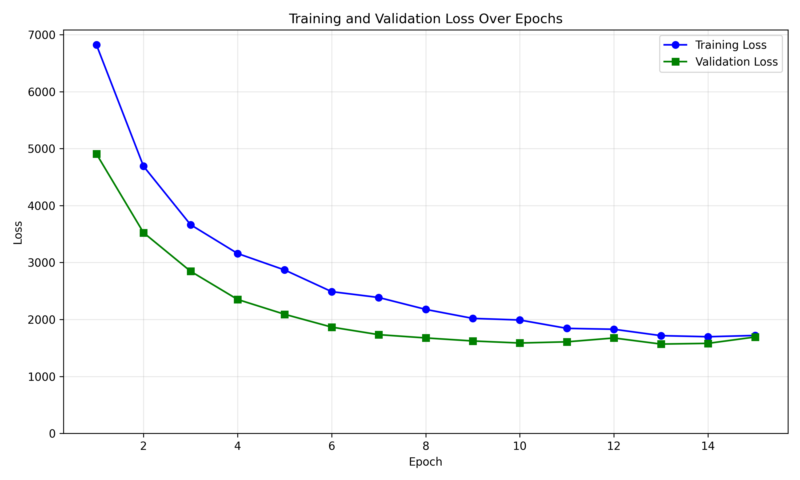
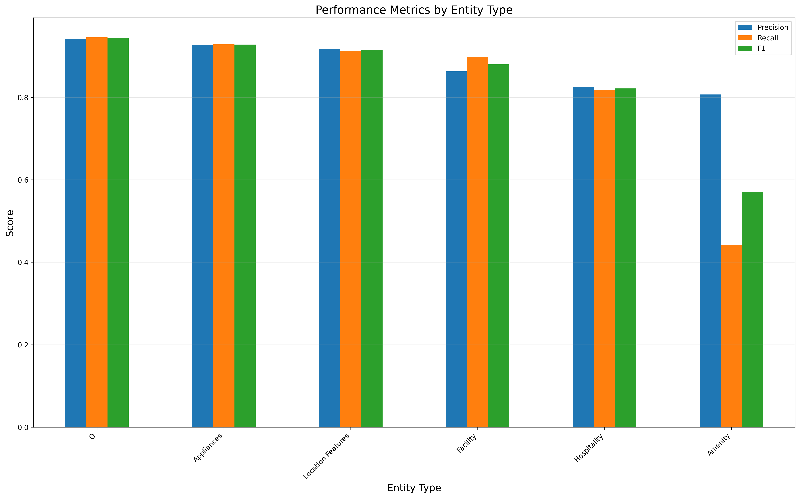
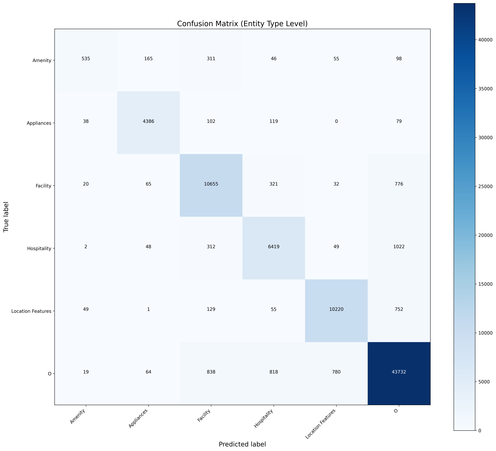
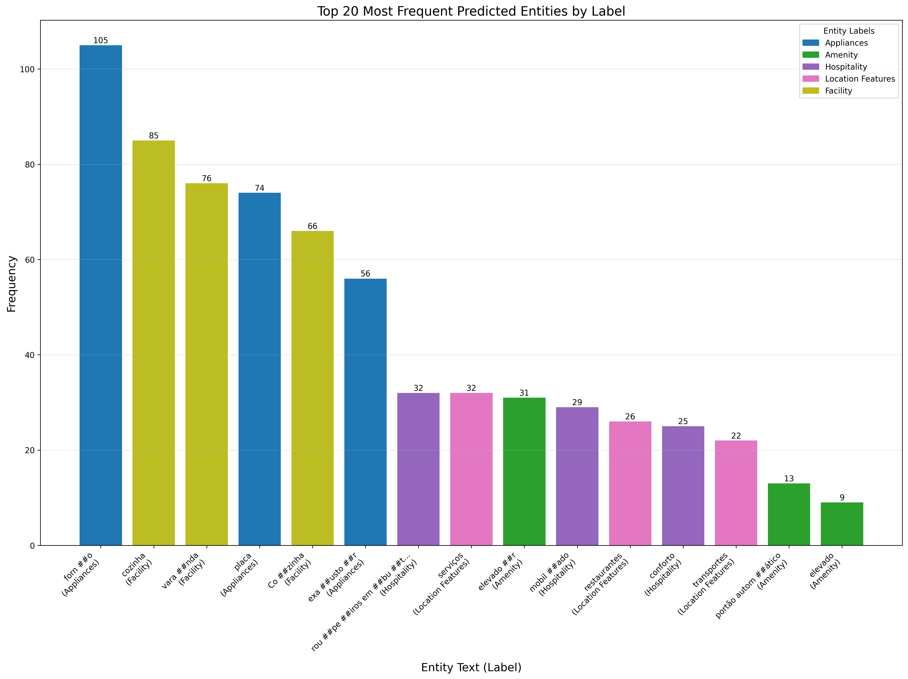
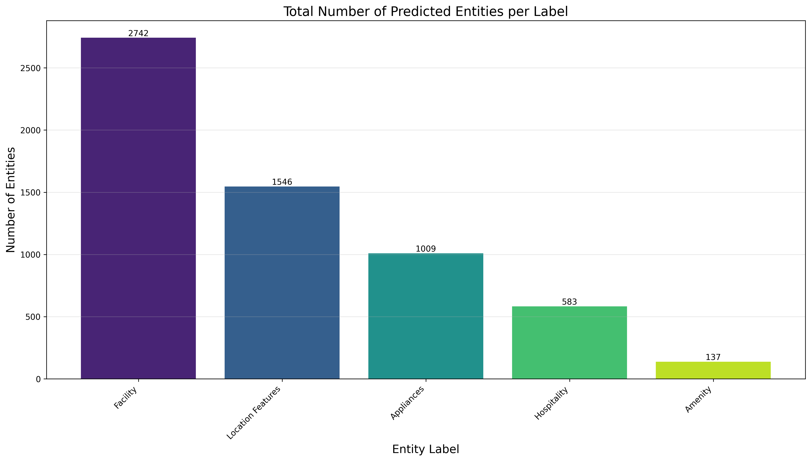
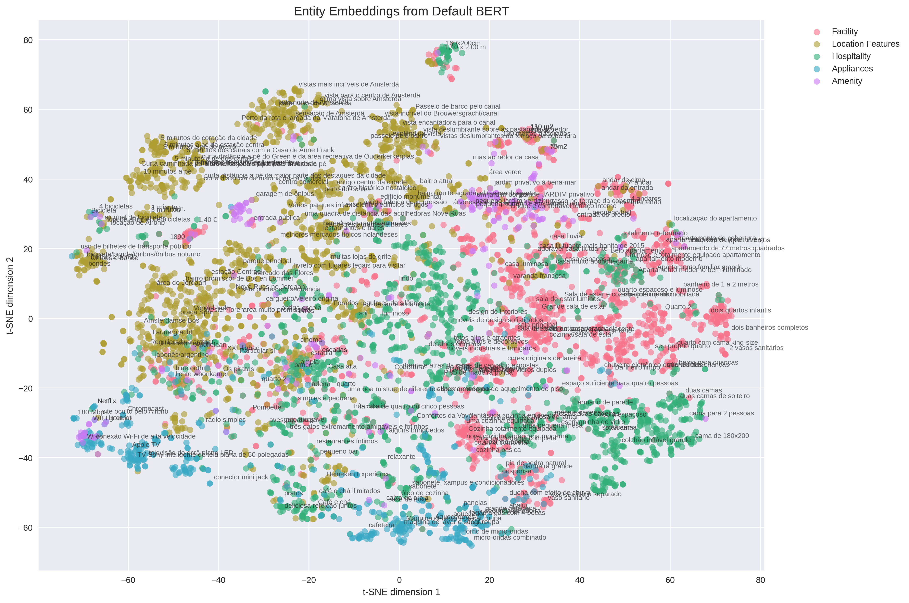
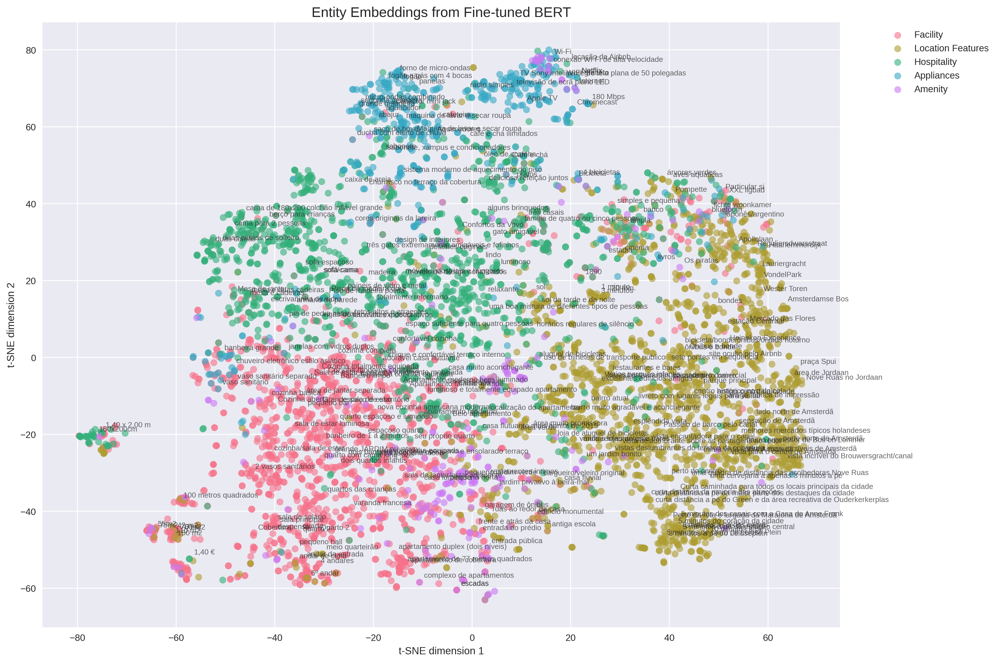
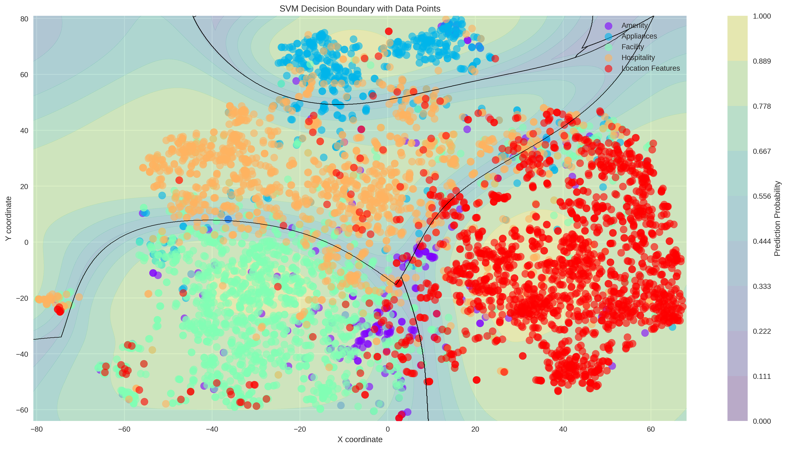

Wisdom of unstructured data#
Recreating Airbnb LAEP system in portuguese real estate agency listings
The LAEP system - Listing Attribute Extraction Platform is a machine learning system that extracts structured information from unstructured text data about Airbnb listings into structured taxonomy labels (reference https://medium.com/airbnb-engineering/wisdom-of-unstructured-data-building-airbnbs-listing-knowledge-from-big-text-data-7c533466a63c).

It consists of 3 main components:
1. Named Entity Recognition (NER) |
2. Entity Mapping (EM) |
3. Entity Scores |
|---|---|---|
|
|
|
Named Entity Recognition#
For this task we are using two different datasets:
Airbnb open source datasets in kaggle, containing about 6 columns of listing details including description, space, summary, neightboorhood, transit and reviews description
Imovirtual scraped rental descriptions
The workflow encompasses the following steps:
Pretrain (AirBnB dataset)
|
Fine tune (imovirtual dataset)
|
📊 Datasets Overview#

Airbnb Dataset (training dataset)Open source dataset from Kaggle Airbnb open source datasets in Kaggle, containing about 6 columns of listing details including description, space, summary, neightboorhood, transit and reviews description. Key Statistics:
Columns:
|
Imovirtual Dataset (fine tune dataset)Scraped rental descriptions Key Statistics:
Content: Collection of descriptions, prices, and property characteristics from all available rentals to date. |
Part I - Pretraining#
Preprocessing pipeline and transfer-learning#
graph TD
A[Translation] --> B[Duplicate Removal]
B --> C[Sentence Splitting]
C --> D[Labeling]
D --> E[BIO Structuring]
E --> F[Validation]
Implementation details#
Translation:
Using Google Translate API
Focuses on maintaining semantic accuracy
Labeling:
Powered by Gemini 2.0 flash
Implements few-shot learning approach
⚠️ Known Issues
- Translation: Quality maintenance challenges during translation, cultural accuracy issues between colloquial Portuguese and translated Portuguese/Brazilian
- Duplicate removal: Needs fuzzy logic implementation for near-duplicate detection
- Sentence splitting: Context loss due to simple end-character detection, needs i-1 and i+1 sentence consideration
- Labeling: Potential low-quality datasets from LLM labelers
Pretrain BERT with MLM + Multiclass objective on language corpus#
Don’t Stop Pretraining#
This aligns with findings from the paper “Don’t Stop Pretraining”, which emphasizes that adapting language models to domains improves downstream task performance by up to 30% [https://www.sbert.net/examples/unsupervised_learning/MLM/README.html]. For Airbnb, a model pretrained on property descriptions, reviews, and booking data would better capture terms like “amenities,” “host policies,” or regional lodging trends compared to generic text.
Improves performance on tasks on that domain and across domains
Increases the available dataset for training tasks and generalization
In summary, the overall objective is:
It maximizes the likelihood of predicting masked tokens based on the conditional support of unmasked tokens (MLM) and predicting the amenity class given the full context.
Learning general language features and tasks specific features#
The addition of a multiclass objective—using Airbnb’s classification system (e.g., property types, pricing tiers, labels)—serves two purposes:
Task Specific Adapatation: we are leveraging the pretraining phase to tune on labeled data, which might further enhance pretraining
Data Efficiency: reduce downstream fine tuning costs (model already encodes task relevant features at pretraining).
Gradient flow#
Mixing unsupervised learning (MLM) and supervised learning (multiclassification) adds different learning signals which may improve gradient flow by injecting gradient diversity and model robustness, reducing the likelihood model stays stuck at local minima and acting as a regularization as well.
This mirrors BERT original training where MLM and Next Sentene Prediction (NSP) are jointly used [https://discuss.huggingface.co/t/how-to-train-bert-from-scratch-on-a-new-domain-for-both-mlm-and-nsp/3115]. The principle of multtask-driven gradient flow improvement is well estabilished during transformer pretraining.
Possible issues#
The cross domain dataset used for pretrained might not be representative of our original dataset
Multiobjective learning functions add a bigger computational costs
Multiclass head adds additional overhead
MLM with multiobjective might compete and not converge if labels are noisy or misaligned
Implemented a beta factor for multiclass objective
Part II - Finetuning#
flowchart TD
subgraph Input
A[Raw Text Data]
end
subgraph Translation Process
B[Translation Module]
end
subgraph Deduplication
C[Exact Match Deduplication]
end
subgraph Text Processing
D[Sentence Splitting]
D1[Boundary Detection]
end
subgraph Entity Labeling
E[LLM Entity Labeling]
end
subgraph BIO Conversion
F[BIO Structuring]
F1[Token Segmentation]
F2[Label Assignment]
F3[Structure Validation]
F --> F1 --> F2 --> F3
end
A --> B
B --> C
C --> D
D --> D1
D1 --> E
E --> F
style Input fill:#e1f5fe
style Translation Process fill:#fff3e0
style Deduplication fill:#f1f8e9
style Text Processing fill:#f3e5f5
style Entity Labeling fill:#fff3e0
style BIO Conversion fill:#e8eaf6
Resulting dataset
|
Label Statistics
|
LLM annotations#
Validation#
Entity Recognition Example
Original Text (with annotations):
- A beleza do apartamento é que depois de um dia maravilhoso na vibrante e movimentada Amsterdã (Location Features), você volta para casa depois de uma curta caminhada ou uma viagem de ônibus/bonde (Location Features) neste adorável apartamento tranquilo. Assista a um filme na Netflix (Appliances), beba um vinho na varanda (Facility) ou vá direto para a cama (Hospitality) em um de nossos dois aconchegantes quartos (Facility).
Cleaned Text (input to model):
- A beleza do apartamento é que depois de um dia maravilhoso na vibrante e movimentada Amsterdã, você volta para casa depois de uma curta caminhada ou uma viagem de ônibus/bonde neste adorável apartamento tranquilo. Assista a um filme na Netflix, beba um vinho na varanda ou vá direto para a cama em um de nossos dois aconchegantes quartos.
Identified Entities (from Cleaned Text):
Structured output (Before BIO conversion)#
{
"text": "Compartilharemos a [sala de estar](Facility), [cozinha](Facility), [banheiro](Facility) e [banheiro](Facility)",
"entities": [
{
"start": 20,
"end": 33,
"label": "Facility",
"text": "sala de estar"
},
{
"start": 47,
"end": 54,
"label": "Facility",
"text": "cozinha"
},
{
"start": 68,
"end": 76,
"label": "Facility",
"text": "banheiro"
},
{
"start": 91,
"end": 99,
"label": "Facility",
"text": "banheiro"
}
]
}
Training loss looks good, with no signs of overfitting. However, it’s obvious it underfits (the loss is still a bit too high after learning). This is very likely due to mislabeled entities and Amenity label. F1 Score: 0.8542
Training/Validation Loss |
Semantic learning Animation |
|---|---|
 |
|

Label metrics#
Label Metrics |
Confusion Matrix |
|---|---|
 |
 |
How well does the model knowledge transfer to our target data?#
Top 20 entities by label |
Total entities per label |
|---|---|
 |
 |
 |
 |
| Cross-domain dataset (train dataset) | Imovirtual listings (test dataset) |
Conclusions
The target dataset outperforms the translated training dataset in terms of embedding quality and class separation. Clear patterns and semantic alignment indicate a stronger signal-to-noise ratio in the target data.
Translation Losses: Translated data introduces noise through context loss, idiomatic inaccuracies, and ambiguities, which blur feature distinctions and harm learning.
Ambiguous Expressions: Less unique entities in the target database ultimately helps. While algorithms might chose different synonyms for the same words, native speakers are usually very keen on using the same expressions.
Key Observations:
- Target embeddings exhibit clearer class definitions and reduced ambiguity.
- Native Portuguese expressions enhance context relevance and discriminative power.
- Translated data introduces noise that hampers embedding clarity and model training.
Translation here acts as a data augmentar and regularization mechanisms as it introduces variability and noise to the data.
Results#
Before pretraining |
After pretraining |
|---|---|
 |
 |
Embeddings Space quality validation#

Model Performance Comparison
LAEP-CNN Model Baseline Scores
| Entity | Precision | Recall | F1 Score |
|---|---|---|---|
| Overall | 75.95% | 74.70% | 75.32% |
| Amenity | 80.75% | 84.38% | 82.52% |
| Facility | 74.15% | 67.66% | 70.76% |
| Hospitality | 61.99% | 58.47% | 60.18% |
| Location features | 71.80% | 63.19% | 67.22% |
| Structural details | 72.66% | 68.49% | 70.51% |
Our BERT Model Scores
| Class | Precision | Recall | F1 Score | Support |
|---|---|---|---|---|
| Amenity | 76.00% | 47.00% | 57.00% | 221 |
| Appliances | 79.00% | 69.00% | 74.00% | 498 |
| Facility | 79.00% | 83.00% | 81.00% | 1551 |
| Hospital | 74.00% | 77.00% | 75.00% | 1349 |
| Location | 83.00% | 89.00% | 86.00% | 1714 |
| Accuracy | 79.00% | 5333 | ||
| Macro | 63.00% | 64.00% | 63.00% | 5333 |
| Weighted | 76.00% | 79.00% | 77.00% | 5333 |
Outliers might indicate data quality issues:
mislabled entities in training data
unusual but valid entities which are feature rich
noise that should be cleaned
Data quality improvement actions:
Review entity’s label accuracy
Identify systematic labeling errors
Remove or relabel incorrect instances
Analysis
We can conclude the entities are generally well learnt and with show meaningful representation. Its possible to see clear outliers, that is, entities which are assigned to the wrong label; its possible to see the boundary entities and where each label is semantically connected to other label. However, an important note is the Amenity type label, which is an obvious stand out because it has a sparse representations and its features we're not learnt by the model. Possible cause include: undersampling and under-represented, with only less than 300 samples; its semantic definition is not well defined and overlaps with other labels.
Key observations:
- Labels show a very clear definition in the embeddings space
- Model captured semantic rich patterns and relevant context information
- Amenity label has no semantical definition and overlaps with other labels, which will be harmful during fine tuning (NER)
Further investigation into the semantic similarity between frequently confused entities may help improve model performance.
Future work#
Improve deduplication algorithm for near duplicates
Improve translation algorithm to preserve language and semantics
Reassess label classes definition to avoid overlaps, specially on ‘Amenity’
Remove or relabel incorrect entities
Apply this data mining model to imovirtual joining with the tabular data from the listing to get meaningful data.